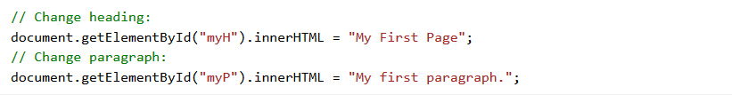

<<!DOCTYPE html>
<html lang="en">
<head>
	<meta charset="UTF-8">
	<title>JS Comments</title>
	<link rel="stylesheet" type="text/css" href="css/style.css">
</head>
<body>
<header>
    <a href="index.html">Back to curse</a>
</header>
	<div class="set">
        <h3 class="letter">JS Comments</h3>
    </div>
    <content>JavaScript comments can be used to explain JavaScript code, and to make it more readable.
	JavaScript comments can also be used to prevent execution, when testing alternative code.</content>

		<h4>Example</h4>

</body>
</html>